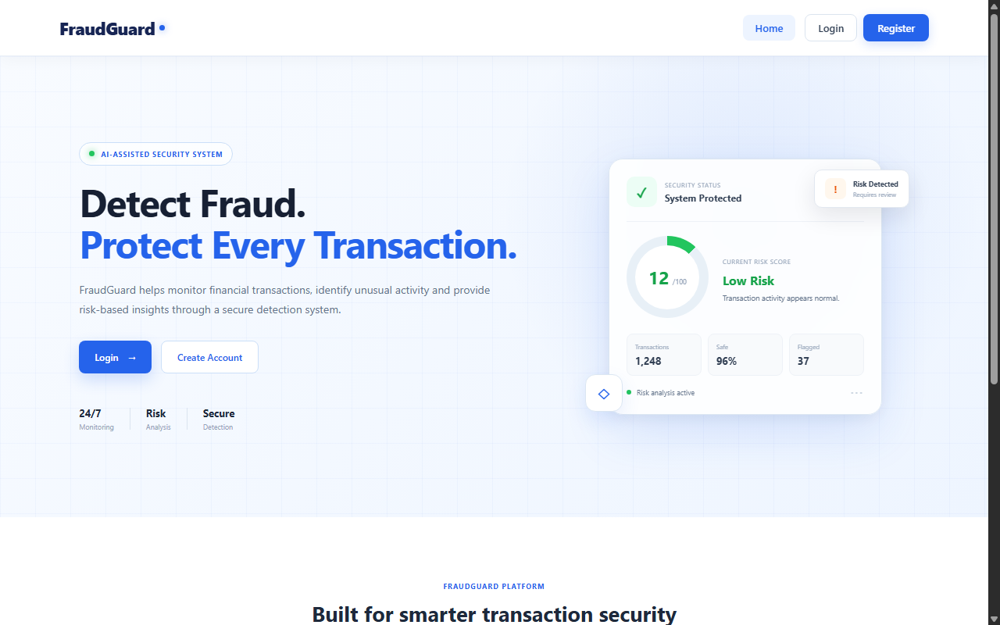
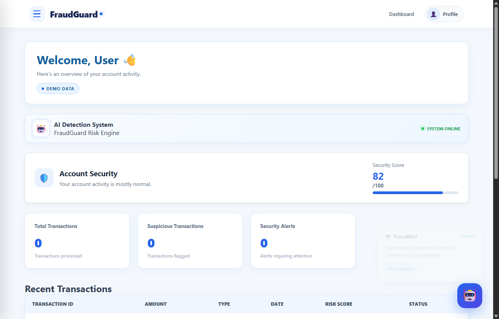
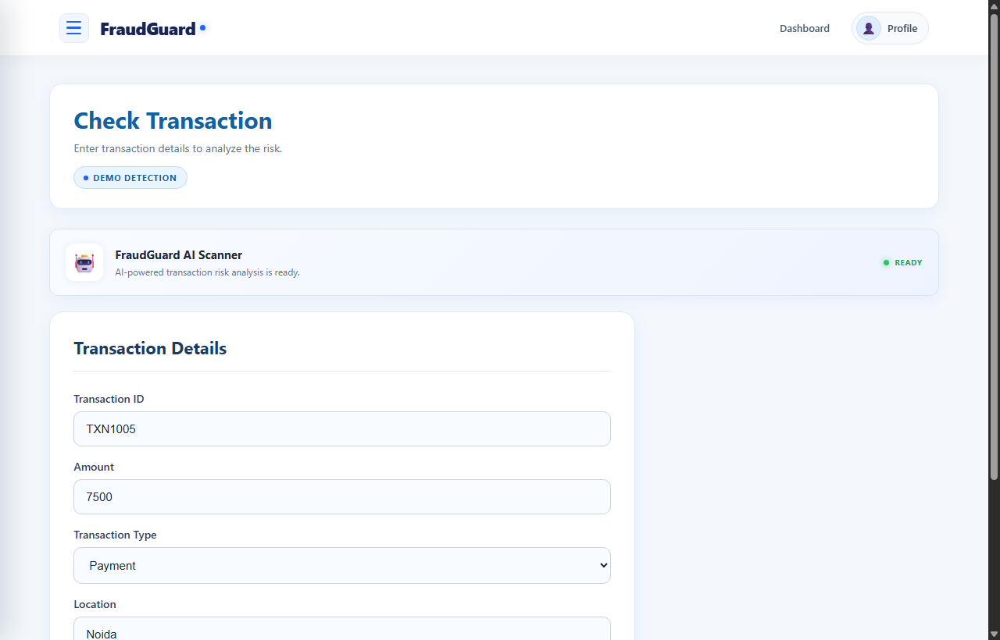
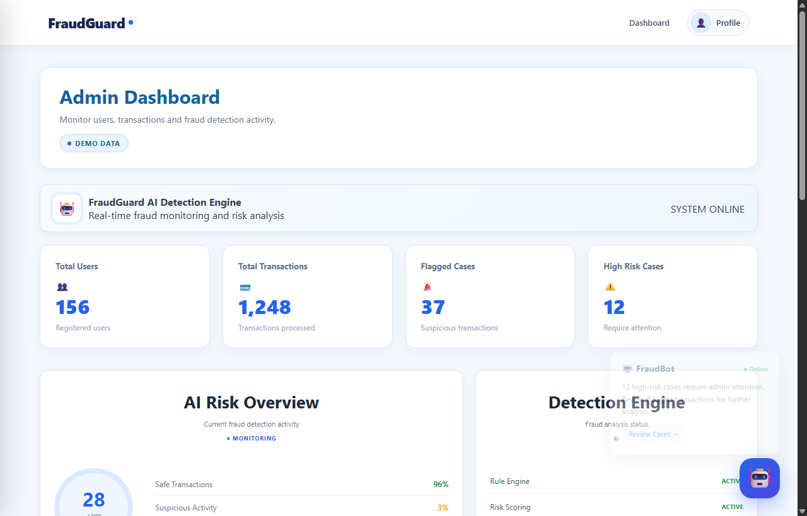
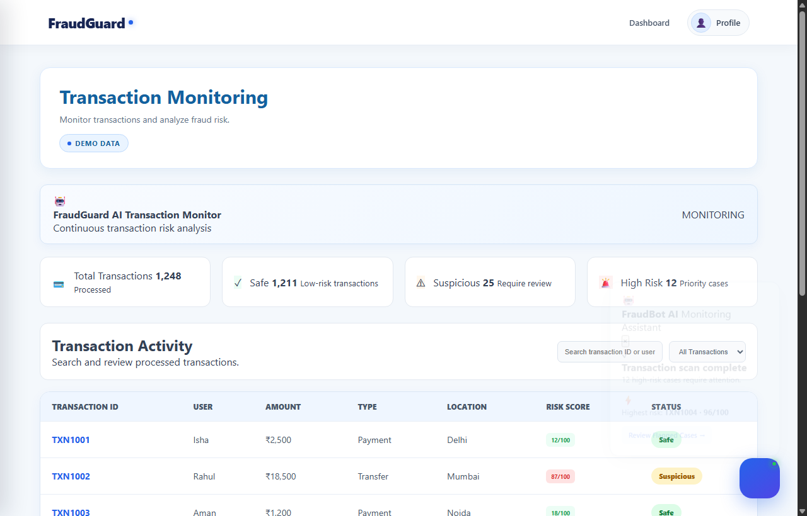
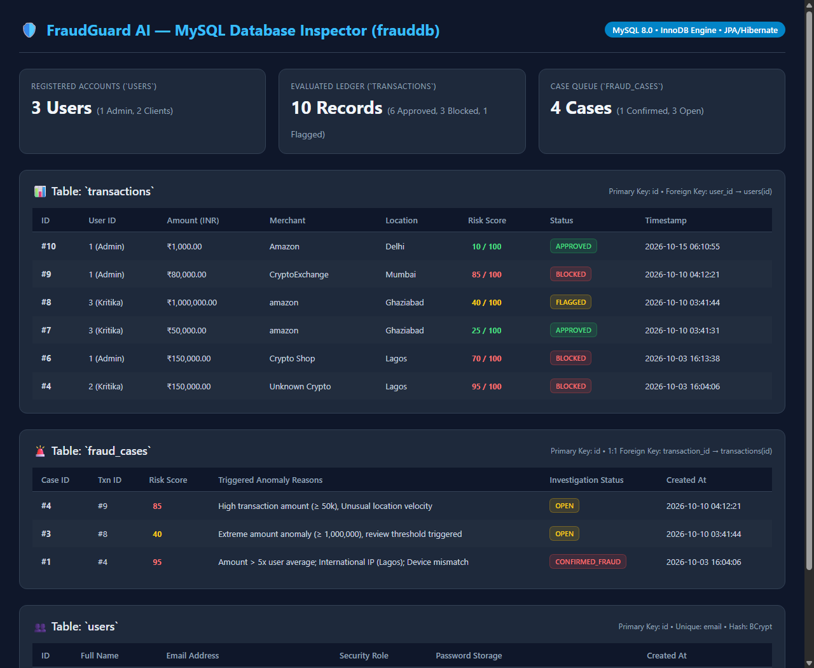

An enterprise-grade real-time financial security and anomaly detection platform combining Spring Boot 4, MySQL 8, and an interactive modern web UI.

Clean separation of concerns designed for high scalability, stateless security, and transactional reliability.
Responsive multi-dashboard UI with dynamic SVG risk gauges, alert streams, and client-side fallback simulation via localStorage.
Java 26 REST API service running Spring Security 6 with stateless JWT authentication, BCrypt encryption, and fraud scoring services.
JPA/Hibernate managed relational database (frauddb) holding users, transaction ledgers, and linked investigation cases.
Complete implementation, local hosting, production packaging, and cloud publishing milestones.
transaction.html to allow real-time AI scanning.fraud-detection-0.0.1-SNAPSHOT.jar.
Clean, modern interface designed to give users immediate feedback and clear explanations on payment safety.

High-visibility dashboard empowering fraud analysts to monitor trends and review flagged cases.

Continuous surveillance with instant categorization into Safe, Suspicious, and High Risk.

Relational schema powered by MySQL 8.0 InnoDB engine with full referential integrity and audit records.
users: Stores user accounts, BCrypt password hashes, and security roles (ADMIN/USER).transactions: Complete transaction records with amount, merchant, location, timestamp, and risk score.fraud_cases: Linked 1:1 with transactions for high-risk alerts with investigation notes and review statuses.
Summary of delivery and next strategic engineering phases.
Hosted locally on http://localhost:8080 with active MySQL connection, packaged JAR, and one-click launcher.
Pushed to GitHub with complete engineering documentation, clean folder architecture, and MIT license.
Integration of serialized XGBoost/Random Forest models via ONNX and Kafka stream ingestion.
Designed and Developed by Kritika Perti • October 2026